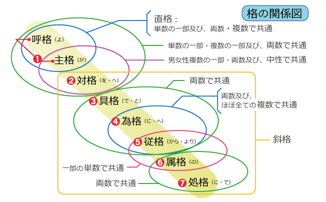

大歓喜トップ >> サンスクリット｜トップ >> 音読のための基礎文法 >> -bhis (-bhiḥ)
-bhis (-bhiḥ)〔複数具格〕
jyeṣṭharājaṃ brahmaṇāṃ brahmaṇaspata ā naḥ śṛṇvannūtibhissīda sādanam || Gaṇapati Prārthanā ／「ヴェーダテキスト1」サティヤ サイ出版協会 p.53
サンスクリット文献を読んでいるとき、時々、-bhi- / -bhy- (ビヒ)という音が耳につくが、その大半は名詞・形容詞の格変化（declension・曲用）の語尾である。上記はその一例で、太字・斜体は注目する単語を示すために筆者が付けたもの。ここでは、ūtibhisという単語にご注目いただきたい。
格変化というのは、主に、日本語ならば格助詞「が・の・を・に・と・へ・から・より・で」などで表される、ある体言（名詞類）が文中の他の単語とどういう関係にあるかを示す語形変化である。英語では、代名詞で「I, my, me」などと語形変化するあれである。おそらくは「所有格」「目的格」などという文法用語をご記憶であろう。サンスクリットでも格が大切である。
-bhisという語尾は、複数具格を表す。⇒『～（たち）によって／とともに』
「具格とは何ぞや？」と言えば、この具の字は、道具の具であると同時に、「具（そな）わる」とか「ともに」と読む。「～によって」（道具・手段・受動文の動作主・原因）や「～とともに」（同伴・結合）を表すのが具格である。英語で言えば、前置詞「with」をイメージすれば分かりやすいであろう。
日本語ならば、一つの格助詞を覚えれば、大概の名詞と一緒に使うことができる。その物事が単数であろうが複数であろうが、名詞の語形がどうであろうが、格助詞が変わる気づかいはないのだが、サンスクリットはそうはいかない。複数と付けているのは、複数でなくてはこの形は使いませんよ、という意味である。
ともかく、-bhisと聞こえたら、「『～（たち）によって』の-bhisではないか？」と思って直前の音群を見ていただきたい。
ここでは、ūtiが「助力・加護」の意味の女性名詞なので、「（幾重もの）助力によって」、ということではないか？と読み解くのである。ただし、その解釈が正しいかは、全体で意味が通じるか確認するまでは確定できない。
サンスクリットには多義的な単語が多く、しかもこのように、単語の間を区切らずに書かれている場合が多いので、最初の仮説で全体の意味が通じなければ、他の語義や単語の切り方でどうなるかを考えてみる必要がある。ただ、今はそのことは少しおいて、別の個所を見てみよう。
praṇo devī sarasvatī vājebhirvājinīvatī | Gaṇapati Prārthanā ／「ヴェーダテキスト1」サティヤ サイ出版協会 p.54
先ほどの文献のすぐ続きである。実は、-bhirというのは、-bhisと同じなのだ。
先ほどの個所では、次に続く音が[s]だから、-bhisが使われていて、今度の個所では、次に続く音が[v]だから、-bhirになっている。
「有声音」と「無声音」の区別が分かる方は、概ね有声音の前では-bhirになる、と思っていただきたい（有声音を簡単に説明すると、日本語では、濁音や、ア行・ナ行・マ行・ヤ行・ラ行・ワ行・ンの音のことである）。その例外は、次が[r]の場合で、-bhir r-ではなく-bhī r-となる。
-bhisになるのは、[s],[t],[th]の前のみ。他の無声音の前や文末では、-bhiḥとなることが多い。
いろいろあるけれども、まとめると、-bhis,-bhiḥ,-bhir,-bhī r-,-bhiś,-bhiṣの6種類の形が、-bhisという格語尾の、次に続く音によるバリエーションである。要するに、-bhis,-bhiḥ,-bhir,-bhī r-,-bhiś,-bhiṣを見たら、複数具格じゃないか？と思っていただきたい。何事にも例外はあるけれども、9割方当たっているはずである。
vājebhirというのは、リグ＝ヴェーダの時代独特の古い表現で、vājaというのは（主に馬の）元気・活力・速力のこと。その複数具格であるvājebhirは副詞的に固定化して、「強大に／偉大に、非常に／甚だ」の意味で用いられる。
Q. それでは、-bhis,-bhiḥ,-bhir,-bhī r-,-bhiś,-bhiṣがなかったら、それは複数具格ではないと言えるの？
A. 言えません。それは、他にも複数具格を示す重要な語尾があるからで、その形は-aisです。この-aisも次に続く音によって音が変わりますが、-ais系統も-bhis系統もどちらもなければ、複数具格ではないと言えます。
Q. 具格という文法用語には、他の言い方もあるの？
A. はい。英語では「instrumental」（手段になるもの）と言って、Ins.やinst.などと略されます。
サンスクリットでは、「tṛtīya-vibhakti」（第三格語尾）と呼ばれます。日本語でも他に助格・造格（※どちらかと言えばロシア語などの文法用語）などと呼ぶことがあります。英語は覚えておくと文法書などを見るときに役立つでしょう。
Q. -bhi-,bhy-の音を含んで、格語尾ではない例って？
A. √bhī（恐れる）・√bhid（裂く）・√bhikṣ（乞う）などとそこから派生する単語、それから接頭辞abhi-を含む単語があり、もし紛れるとすれば、後者のうちabhi-+歯擦音の単語です。けれども存在を知っていれば、まず大丈夫でしょう。
Q. 具格なんて初めて聞いたけれど、サンスクリットには他にどんな格があるの？
A. 格は全部で8種類あります。日本語での一般的な文法用語で言えば、主格・対格・具格・為格・従格・属格・処格・呼格です。この用語は書物によって違いがあり、対格のことを目的格や業格、為格のことを与格、従格のことを奪格、属格のことを所有格・生格、処格のことを於格・地格、などとも言いますので、英語と併せて覚えておいた方が無難です。
伝統文法では、呼格を独立した格に数えず、7つの格（sapta-vibhakti）とします。
英語などと比べると格段に多いですが、反面、格変化のおかげで語順はかなり自由です。北欧のフィンランド語の15格やエストニア語の14格などと比べると、格の種類が特別に多いとも言えなくなります。
残りの格の意味は、別のページで説明します。

Q. これが複数ということは、他に単数形用の具格語尾もあるんですよね？
A. そうです。それだけでなく、二つのもの・ペアを特別に表す両数（双数）という形もあります。その辺はまた追々見ていきましょう。
（最終更新2013.8.31）
大歓喜トップ >> サンスクリット｜トップ >> 音読のための基礎文法 >> -bhis (-bhiḥ)